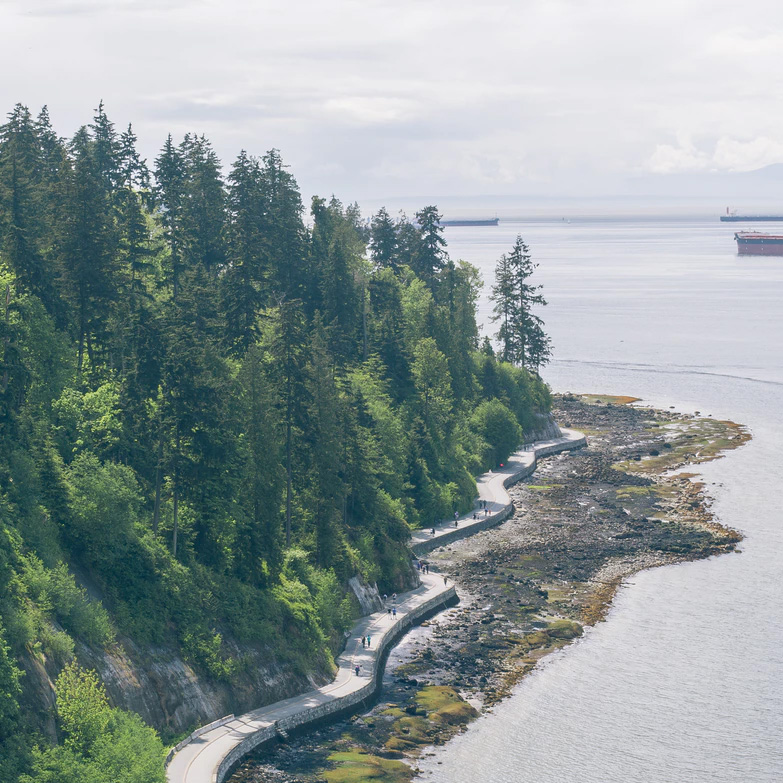
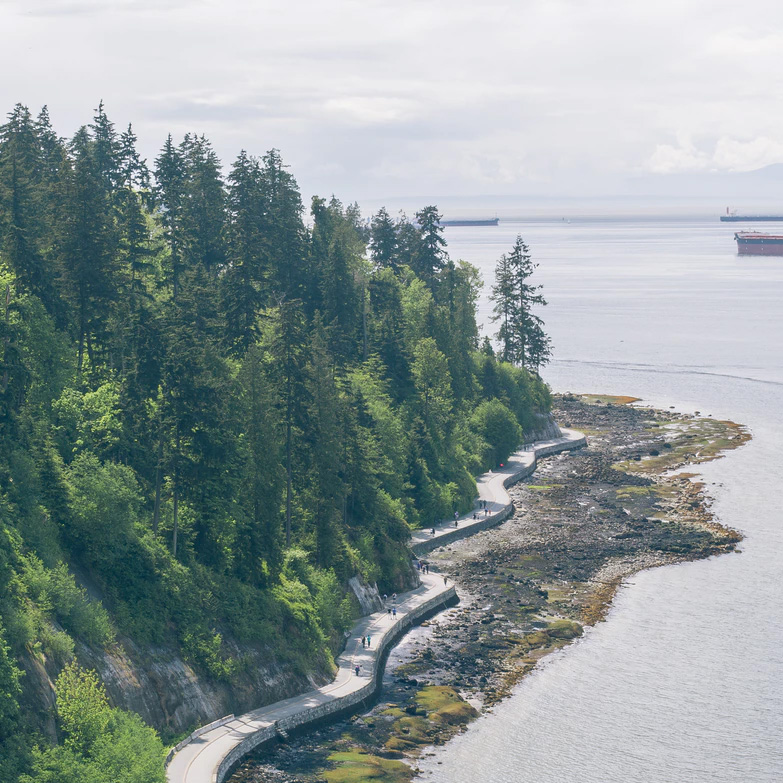

Green is the prime color of the world


I declare this world is so beautiful that I can hardly believe it exists
the sky, the mountain, the tree...
“I declare this world is so beautiful that I can hardly believe it exists.” The beauty of nature can have a profound effect upon our senses, those gateways from the outer world to the inner, whether it results in disbelief in its very existence as Emerson notes, or feelings such as awe, wonder, or amazement.
Unseen beauty
My work explores and reveals the invisible, inviting the viewer to look beyond the seen to appreciate the beauty and mystery of the unseen.
 
